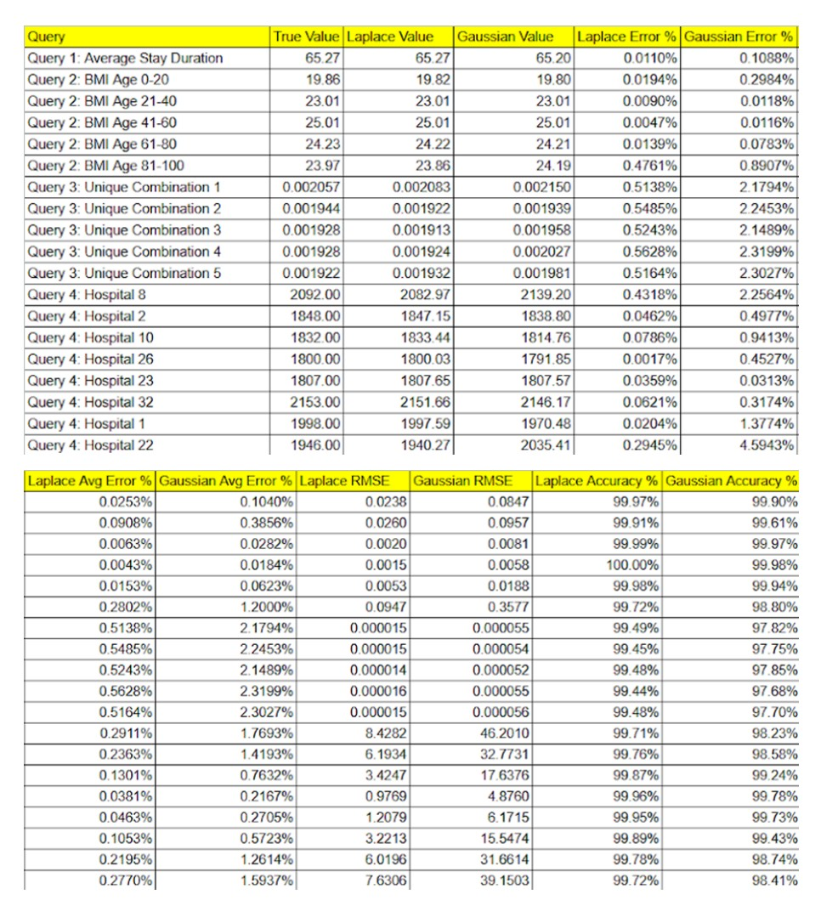

The Objective
Assessing and mitigating re-identification risks in large-scale medical datasets using advanced noise-injection mechanisms.
As medical institutions scale their data sharing for research, the vulnerability of patient PII (Personally Identifiable Information) increases. This project evaluates Differential Privacy (DP) techniques to protect sensitive records from linkage attacks while ensuring the data remains mathematically useful for healthcare analytics.

Comparison of RMSE and Average Error across Laplace and Gaussian noise mechanisms under varying epsilon values.
Mechanism Implementation
I implemented both Laplace and Gaussian mechanisms to sanitize sensitive medical attributes, such as stay duration, admission deposits, and patient BMI. By calculating the global sensitivity of specific queries, I calibrated the added noise to ensure that the removal or addition of a single patient record does not significantly alter the output.
Privacy vs. Utility Trade-off
A critical phase of the project involved measuring the Utility Loss. Through comparative analysis of RMSE (Root Mean Square Error), I determined that the Laplace mechanism achieved an average error below 0.01% in several key scenarios, providing a superior balance of data security and analytical accuracy compared to the Gaussian approach for this specific dataset.
Clinical Relevance
The system was tested against four distinct clinical queries to ensure robustness. The findings demonstrate that differential privacy is an effective bridge for hospitals to comply with HIPAA and GDPR standards while still providing researchers with the high-fidelity data needed for life-saving medical insights.

Visualizing the distribution of admission deposits: True values vs. Differential Privacy sanitized results.